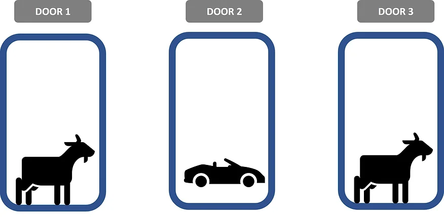

There are generally two schools of thoughts in defining probability: Bayesian and Frequentism. The former views probability as a degree of our beliefs towards an event occurrence, while the latter views it as a relative frequency of an event occurrence. This post presents the use of both Bayesian and frequentist approaches to solve the famous Monty Hall problem.

Monty Hall Problem
I first chanced upon this probability puzzle in the movie, 21. This puzzle originated from an old American game show Let’s Make a Deal, and was named after the host Monty Hall. Based on Wikipedia, this was made famous in a letter to Marilyn vos Savant’s “Ask Marilyn” column in 1990:
Suppose you’re on a game show, and you’re given the choice of three doors: Behind one door is a car; behind the others, goats. You pick a door, say No. 1, and the host, who knows what’s behind the doors, opens another door, say No. 3, which has a goat. He then says to you, “Do you want to pick door No. 2?” Is it to your advantage to switch your choice?
Marilyn proposed that you should always switch, as it would double your chance of winning the car from 1/3 to 2/3. This answer was met with huge criticism as people intuitively tend to think that since there are only two doors left, the probability of the car behind either door is 1/2. Hence, the odds are the same regardless of your choice to switch the door. In this blog post, I would demonstrate how we can use either the Bayesian or frequentist approach to answer this paradox.
Thinking like a Bayesian
The Bayesian school of thought takes a subjective approach towards probability, and is based on the Bayes’ Theorem. It is fundamentally a concept of conditional probability defined by the formula below. In a nutshell, the resulting probability also known as the posterior probability is derived using three components: the likelihood, the prior probability, and the probability of observing the evidence (to normalize the numerator to a value between 0 and 1). I have written how we can use the Bayes’ Theorem to explain why different individuals appraise similar empirical evidence differently in my previous blog post.
In the context of the Monty Hall problem, we are interested in comparing the probability between switching or sticking to our initial choice of door given that the host chose to open a door with a goat behind. Using the example problem presented above, given that door 3 has been revealed to be a goat, the car would be either behind door 1 (our initial choice) or door 2 (if we choose to switch). To solve the problem, let us apply the Bayes’ Theorem formula and compare P (door 1 = car | opens = door 3) and P (door 2 = car | opens = door 3).
Prior Probability - P(A)
Let’s start with the simplest probability to compute, the prior probability. This refers to our initial expected probability of the car behind either door 1 and door 2 at the start of the game before door 3 was opened. Assuming that the car was randomly assigned, each door has an equal chance of having the car behind. Thus, P (door 1 = car) and P (door 2 = car) have equal probability of 1/3.
Likelihood - P(B|A)
Next, we would compute the likelihood of the host opening door 3 for respective hypotheses. For the first hypothesis, if the car is behind door 1, the host can either open door 2 or 3 to reveal a goat. Hence, P (opens = door 3 | door 1 = car) is 1/2. On the other hand, if the car is behind door 2, the host has no other choice but to open door 3 since it is the only other door with the goat behind. Therefore, for the second hypothesis, P (opens = door 3 | door 2 = car) equals 1.
Joint Probability - P(B|A) X P(A)
With the likelihood and prior probability values known, we can work out the numerator values of the formula for both hypotheses.
P (opens = door 3 | door 1 = car) X P (door 1 = car) = 1/2 X 1/3 = 1/6
P (opens = door 3 | door 2 = car) X P (door 1 = car) = 1 X 1/3 = 1/3
Probability of observed evidence - P(B)
We can derive the probability of observed evidence by simply adding up the joint probabilities. This value represents the probability that the host chose to open door 3 given the contestant’s selection of door 1.
P (opens = door 3) = 1/6 + 1/3 = 1/2
Posterior Probability - P(A|B)
Finally, we can solve for our posterior probabilities by inputting all the derived values above into the formula.
P (door 1 = car | opens = door 3) = (1/6) / (1/2) = 1/3
P (door 2 = car | opens = door 3) = (1/3) / (1/2) = 2/3
The posterior probability values show us that if we stick to our choice of door 1 after the host revealed a goat behind door 3, the chances of winning a car is 1/3. On the contrary, if we choose to take up the offer to switch to door 2, our chances are doubled to 2/3. Therefore, the Bayesian approach supports Marilyn vos Savant’s suggestion to always make the switch if given the choice to.
Thinking like a Frequentist
In contrast to a Bayesian approach, as the name suggests, a frequentist determines probability based on sampling frequency instead. For example, if we want to know the probability of getting a ‘heads’ in a coin flip, we may flip the coin for x number of trials and determine the probability based on the frequency distribution of a ‘heads’ occurrence. As purported by Bernoulli’s Law of Large Numbers, the long-run frequency of an event occurrence would converge to its theoretical probability. Therefore, in order to solve the Monty Hall problem, we may run a simulation of the game show puzzle over a large number of trials and compare the frequency of winning a car between the decision to stick to our initial choice and the decision to switch our choices.
For this project, I performed a Monte Carlo simulation using python programming language. The Monty Hall game was simulated for a reasonably large number of repetitions and the odds of winning was recorded for respective strategies. The only required package for the simulation is the random package. First, I created three empty lists to store the results for each sample simulation.
# Create empty lists to store simulation results output
chance_of_winning_ifswitch_list = []
chance_of_winning_ifdonotswitch_list = []
percentage_diff_list = []Next, the simulation was set up using ‘for-loops’. In each simulation loop, the locations of the car and goats were randomly assigned and a random door was chosen as the contestant’s initial selection. Given that the game host would always open another door with a goat, the decision to switch would backfire only if the initial selected door happens to have the car prize behind. In other words, the probability of winning if choose not to switch choices is equivalent to the probability of choosing the door with the car in the first place. Therefore, an ‘if-else’ conditional statement was included to check whether the initially selected door has a car or not. If the chosen door does not have a car behind, we assign a value of 1 to represent the event of winning when choose to switch choices. If the chosen door has a car behind, we assign a value of 0 to represent the event of winning when choose not to switch choices.
To determine the frequency of winning for each strategy, the odds of winning were calculated based on a sample of 1,000 simulated rounds of the Monty Hall game. This sampling was repeated 10,000 times to determine the distribution of winning percentages for each strategy. A random seed value was set for reproducibility of the results.
# Create simulation using for-loops
# Repeat 10000 trials with 1000 samples per trial
for i in range(10000):
results_list = []
for i in range(1000):
door_list = ["car", "goat", "goat"]
random.shuffle(door_list)
chosen_door_number = random.sample(range(3), 1)
chosen_door = door_list[chosen_door_number[0]]
if chosen_door != "car":
results_list.append(1)
else:
results_list.append(0)
# Compute winning percentage if choose to switch
chance_of_winning_ifswitch = sum(results_list)/len(results_list)*100
# Compute winning percentage if choose not to switch
chance_of_winning_ifdonotswitch = 100 - chance_of_winning_ifswitch
# Compute difference in winning percentage between the two strategies
percentage_diff = chance_of_winning_ifswitch - chance_of_winning_ifdonotswitch
# Append the results to respective lists
chance_of_winning_ifswitch_list.append(chance_of_winning_ifswitch)
chance_of_winning_ifdonotswitch_list.append(chance_of_winning_ifdonotswitch)
percentage_diff_list.append(percentage_diff)The figure below illustrates the distribution of winning odds for both strategies based on our simulation results. The blue histogram presents the distribution for the strategy to switch while the yellow histogram presents the distribution for the strategy to stick to the initial choice. In accordance with the central limit theorem, the distribution of sample means would approximate a Gaussian or normal distribution when the sample size is large. As expected from our large number of simulation trials, we observe a bell curve that characterises a normal distribution.

The x-axes of the two histograms clearly indicate the difference in odds of winning between the two strategies. You go home with a car 62-72% of the time if you choose to switch as opposed to 28-38% if you choose not to switch. This is further supported by the 95% confidence intervals computed for both strategies. Within 95% of the sampled winning odds from the 10,000 trials, the frequency of winning if you switch is between 66.646 and 66.705% while sticking to the same door selection would be between 33.295 and 33.354% instead. Since the 95% confidence intervals do not overlap, we can infer that there is a statistically significant difference in winning percentage between the two strategies. Indeed, as illustrated in the third histogram (orange in colour), we are 95% confident that choosing to switch would increase our odds of winning by 33.293 to 33.410%. Therefore, the frequentist approach also supports Marilyn vos Savant’s suggestion to always make the switch if given the choice to.
Conclusion
This blog post has demonstrated the use of Bayesian and Frequentist approaches to solve the Monty Hall problem. Through the examples above, we can see the different approaches to derive probability values. While both approaches are different, the probabilities derived were similar to one another in the context of the Monty Hall problem. The results clearly suggest that regardless whether you subscribe to a Bayesian or Frequentist paradigm, switching your choice is always a wiser option to increase the chances of winning the car.
Simulation, analysis and visualisation were performed using Python. Full code can be found here.